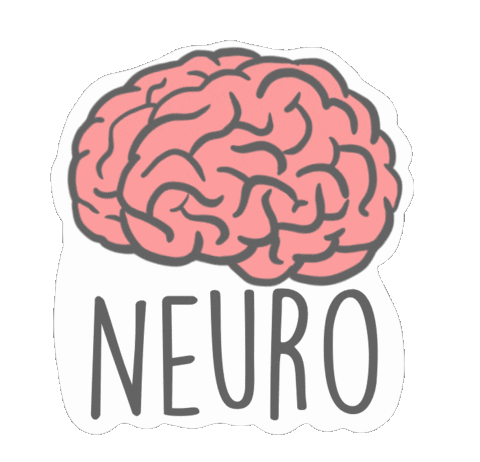
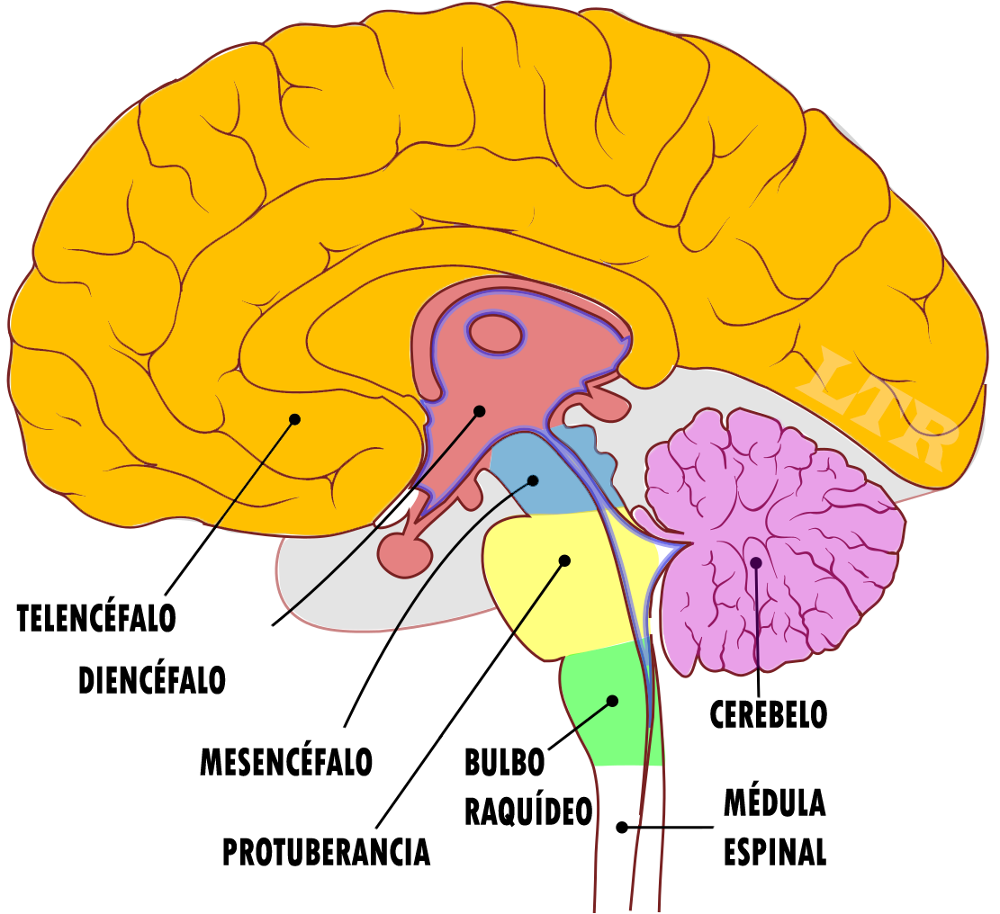
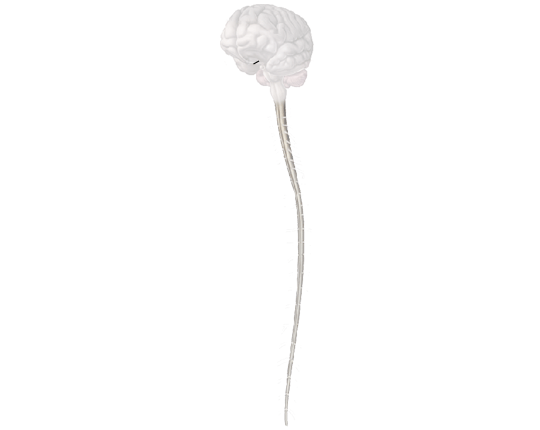

Relationship Function
The relationship function is based on capturing variations in the environment (the so-called stimuli), evaluating them and issuing appropriate responses.
Systems and Devices Involved
Receivers
The receptors, also known as "sense organs", are in intimate contact with the nervous system. Examples include the eyes, nose, tongue, etc.
Nervous System
The nervous system is basically made up of nervous tissue, made up of nerve cells or neurons.
Endocrine System
The endocrine system is made up of endocrine glands, which secrete substances (hormones) into the blood, causing specific effects in the cells.
Effectors
The effectors are the organs and devices responsible for carrying out responses, such as movements and secretions.
Neurons and the Transmission of Nervous Impulse
Neurons are cells specialized in the transmission of information thanks to the generation of electrical currents. There are sensory and motor neurons that conduct the nervous impulse in different directions.
The Human Nervous System
The nervous system has two parts: the central nervous system (CNS) and the peripheral nervous system (PNS).
Central Nervous System (CNS)
It is made up of the brain and spinal cord, protected by bones and membranes called meninges. The CNS receives and interprets sensory impulses and generates motor impulses.
Peripheral Nervous System (PNS)
It is the set of nerves that connect the CNS with various parts of the body. Nerves can be sensory, motor or mixed and are classified according to different criteria.
Parts of the Central Nervous System (CNS)
Brain
It is a mass of neurons composed of gray and white matter. It is divided into different parts:
- Brain: It is the largest part and it contains memory, the ability to think and language.
- Limbic System: It is located in the deep center of the brain and receives and processes emotions and emotional responses.
- Thalamus: It acts by selecting the information that goes to the brain.
- Hypothalamus: Regulates the autonomic nervous system and has influence on the pituitary gland.
- Cerebellum: It intervenes by controlling the muscles responsible for maintaining posture and body balance.
- Medulla oblongata: It is located under the cerebellum and controls autonomic functions such as breathing and blood pressure.
Spinal Cord
It has gray matter inside and white matter on the outside. Spinal nerves leave it, innervating nearby muscles, glands, and organs.